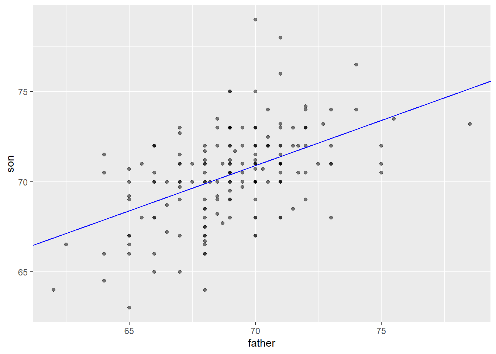
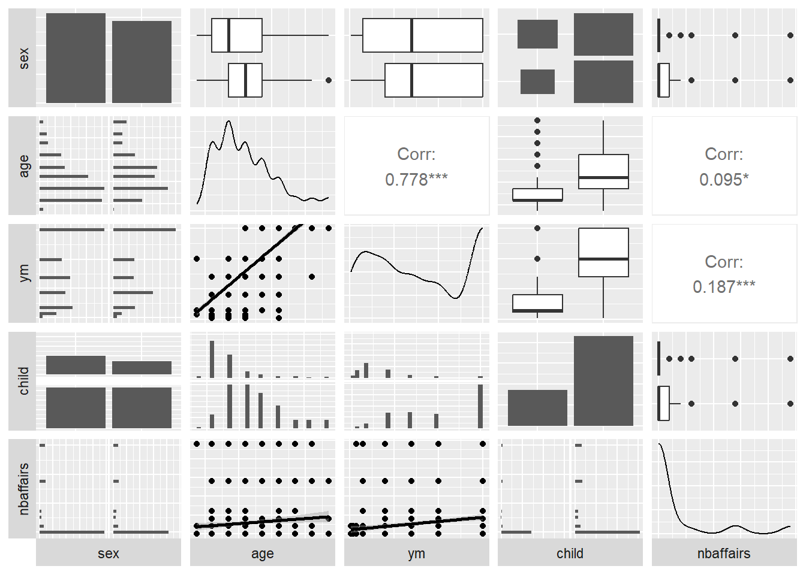

17 from correlation to multiple regression
In the previous chapters, we have learned how to summarize and visualize data. We have seen that we can summarize data using descriptive statistics and visualize data using plots.
We can distinguish between analyses of just one variable (the univariate case), two variables (bivariate), and multivariate (many variables).
17.1 bivariate analysis: Galton’s height data
(Note that this section is excerpted directly from From https://github.com/datasciencelabs). Francis Galton, a polymath and cousin of Charles Darwin, is one of the fathers of modern statistics. Galton liked to count - his motto is said to have been “whenever you can, count”. He collected data on the heights of families in England, and he found that there was a strong correlation between the heights of fathers and their sons.
We have access to Galton’s family height data through the HistData package. We will create a dataset with the heights of fathers and the first son of each family. Here are the key univariate statistics for the two variables of father and son height, each taken alone:
data("GaltonFamilies")
galton_heights <- GaltonFamilies %>%
filter(childNum == 1 & gender == "male") %>%
select(father, childHeight) %>%
rename(son = childHeight)
galton_heights %>%
summarise(mean(father), sd(father), mean(son), sd(son))## mean(father) sd(father) mean(son) sd(son)
## 1 69.09888 2.546555 70.45475 2.557061This univariate description fails to capture the key characteristic of the data, namely, the idea that there is a relationship between the two variables. To summarize this relationship, we can compute the correlation between the two variables.
## cor(father, son)
## 1 0.501In these data, the correlation (r) is about .50. (This means that for every standard deviation increase in the father’s height, we expect the son’s height to increase by about half a standard deviation). Incidentally, if we want to save correlations as a matrix, we can use the correlate() function from the corrr package. This function computes the correlation matrix for all pairs of variables in a data frame, which can be easily saved and formatted as a table. The fashion() function can be used to easily clean up the output. (And the parentheses around the whole statement allows us to print out the result to the console / RMarkdown document, as well aas saving rmatrix in our environment).
## term father son
## 1 father .501
## 2 son .50117.1.1 correlations based on small samples are unstable: A Monte Carlo demonstration
Correlations based on small samples can bounce around quite a bit. Consider what happens when, for example, we sample just 25 cases from Galton’s data, and compute the correlation within this sample. Note that I begin by setting a seed for the random sequence. I repeat this 1000 times, then plot the distribution of these sample rs:
set.seed(33458) # why do I do this?
nTrials <- 1000
nPerTrial <- 25
replications <- replicate(nTrials, {
sample_n(galton_heights, nPerTrial, replace = TRUE) %>% # we sample with replacement here
summarize(r=cor(father, son)) %>%
.$r
})
replications %>%
as_tibble() %>%
ggplot(aes(replications)) +
geom_histogram(binwidth = 0.05, col = "blue", fill = "cyan")These sample correlations range from -0.002 to 0.882. Their average, however, at 0.503 is almost exactly that of the overall population. Often in data science, we will estimate population parameters in this way - by repeated sampling, and by studying the extent to which results are consistent across samples. More on that later.
17.1.2 from correlation to regression
In bivariate analysis, there is often an asymmetry between the two variables - one is often considered the predictor (or independent variable, typically x) and the other the response (or dependent variable, y). In these data, we are likely to consider the father’s height as the predictor and the son’s height as the response.
As noted above, one way of thinking about a correlation between variables like heights of fathers (x) and sons (y), is that for every one standard deviation increase in x (father’s height), we expect the son’s height to increase by about \(r\) times the standard deviation of y (the son’s height). We can compute all of these things manually and plot the points with a regression line. (We use the pull function to extract the values from the statistics from tibbles into single values).
mu_x <- galton_heights |> summarise(mean(father)) |> pull()
mu_y <- galton_heights |> summarise(mean(son)) |> pull()
s_x <- galton_heights |> summarise(sd(father)) |> pull()
s_y <- galton_heights |> summarise(sd(son)) |> pull()
r <- galton_heights %>% summarize(cor(father, son)) |> pull ()
m <- r * s_y / s_x
b <- mu_y - m*mu_x
galton_heights %>%
ggplot(aes(father, son)) +
geom_point(alpha = 0.5) +
geom_abline(intercept = b, slope = m, col = "blue") 
Finally, if we first standardize the variables, then the regression line has intercept 0 and slope equal to the correlation \(\rho\). Here, the slope, regression line, and correlation are all equal (I’ve made the plot square to better indicate this).
17.2 multivariate data
For the Galton data, we examined the relationship between two variables - one a predictor (father’s height) and the other a response (son’s height). In this section (drawn from Peng, Caffo, and Leek’s treatment from Coursera - the Johns Hopkins Data Science Program), we will extend our analysis to consider multiple predictors of a single response or outcome variable. You may need to install the packages “UsingR”, “GGally” and/or”Hmisc”.
We begin with a second dataset. You can learn about it by typing ?swiss in the console.
## 'data.frame': 47 obs. of 6 variables:
## $ Fertility : num 80.2 83.1 92.5 85.8 76.9 76.1 83.8 92.4 82.4 82.9 ...
## $ Agriculture : num 17 45.1 39.7 36.5 43.5 35.3 70.2 67.8 53.3 45.2 ...
## $ Examination : int 15 6 5 12 17 9 16 14 12 16 ...
## $ Education : int 12 9 5 7 15 7 7 8 7 13 ...
## $ Catholic : num 9.96 84.84 93.4 33.77 5.16 ...
## $ Infant.Mortality: num 22.2 22.2 20.2 20.3 20.6 26.6 23.6 24.9 21 24.4 ...Here’s a scatterplot matrix of the Swiss data. Look at the first column of plots (or first row of the correlations). What is the relationship between fertility and each of the other variables?
# ds_theme_set()
set.seed(0)
ggpairs (swiss,
lower = list(
continuous = "smooth"),
axisLabels ="none",
switch = 'both')
Here, we predict fertility from all of the remaining variables together in a single regression analysis, using the lm (linear model) command. Note that the result of this analysis is a list. We can pull out the key features of the data using the summary() command. How do you interpret this?
##
## Call:
## lm(formula = Fertility ~ ., data = swiss)
##
## Residuals:
## Min 1Q Median 3Q Max
## -15.2743 -5.2617 0.5032 4.1198 15.3213
##
## Coefficients:
## Estimate Std. Error t value Pr(>|t|)
## (Intercept) 66.91518 10.70604 6.250 1.91e-07 ***
## Agriculture -0.17211 0.07030 -2.448 0.01873 *
## Examination -0.25801 0.25388 -1.016 0.31546
## Education -0.87094 0.18303 -4.758 2.43e-05 ***
## Catholic 0.10412 0.03526 2.953 0.00519 **
## Infant.Mortality 1.07705 0.38172 2.822 0.00734 **
## ---
## Signif. codes: 0 '***' 0.001 '**' 0.01 '*' 0.05 '.' 0.1 ' ' 1
##
## Residual standard error: 7.165 on 41 degrees of freedom
## Multiple R-squared: 0.7067, Adjusted R-squared: 0.671
## F-statistic: 19.76 on 5 and 41 DF, p-value: 5.594e-10Regression is a powerful tool for understanding the relationship between a response variable and one or more predictor variables. We can use it where our variables are not normally distributed, as in the case of dichotomous variables (yes/no, true/false), as well as counts, which often are skewed. Here’s a second dataset, the marital affairs data, which is also included in the Ecdat package. We’ll apply ggpairs here, but for clarity will show only half of the data at a time. The dependent variable of interest (nbaffairs) will be included in both plots:
Fair1 <- Fair %>%
select(sex:child, nbaffairs)
ggpairs(Fair1,
# if you wanted to jam all 9 vars onto one page you could do this
# upper = list(continuous = wrap(ggally_cor, size = 10)),
lower = list(continuous = 'smooth'),
axisLabels = "none",
switch = 'both')
Fair2 <- Fair %>%
select(religious:nbaffairs)
ggpairs(Fair2, lower = list(continuous = 'smooth'),
axisLabels = "none",
switch = 'both')##
## Call:
## lm(formula = nbaffairs ~ ., data = Fair)
##
## Residuals:
## Min 1Q Median 3Q Max
## -5.0503 -1.7226 -0.7947 0.2101 12.7036
##
## Coefficients:
## Estimate Std. Error t value Pr(>|t|)
## (Intercept) 5.87201 1.13750 5.162 3.34e-07 ***
## sexmale 0.05409 0.30049 0.180 0.8572
## age -0.05098 0.02262 -2.254 0.0246 *
## ym 0.16947 0.04122 4.111 4.50e-05 ***
## childyes -0.14262 0.35020 -0.407 0.6840
## religious -0.47761 0.11173 -4.275 2.23e-05 ***
## education -0.01375 0.06414 -0.214 0.8303
## occupation 0.10492 0.08888 1.180 0.2383
## rate -0.71188 0.12001 -5.932 5.09e-09 ***
## ---
## Signif. codes: 0 '***' 0.001 '**' 0.01 '*' 0.05 '.' 0.1 ' ' 1
##
## Residual standard error: 3.095 on 592 degrees of freedom
## Multiple R-squared: 0.1317, Adjusted R-squared: 0.12
## F-statistic: 11.23 on 8 and 592 DF, p-value: 7.472e-15